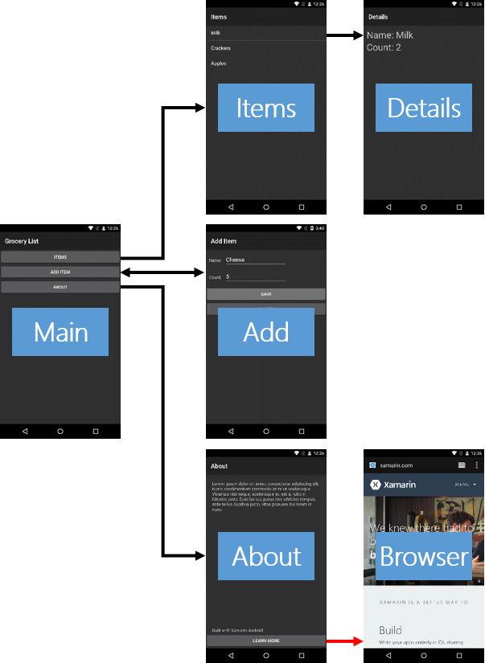

Exercise 6: Launch a system Activity
Duration
10 minutes
Goals
This lab covers how to launch an Android system Activity (i.e. an Activity installed with Android and not part of your application). You will start the web browser Activity and pass in the address of the web page you would like it to display. The red line in the image below indicates the part of the app you will be working on.
Challenge
Use the guidelines here to work through the exercise on your own. Alternatively, you can use the step-by-step instructions given below.
- Open AboutActivity.cs.
- Locate the
OnLearnMoreClickmethod. - Create an Intent with
ActionViewand anhttp://Data value to launch the browser. - Call
StartActivityand pass it the Intent. - Run the app to test your work.
Steps
Below are the step-by-step instructions to implement the exercise.
Launch the web browser
- Open AboutActivity.cs.
-
Locate the
OnLearnMoreClickmethod. -
Create an Intent with an Action of
ActionView. You can pass the symbolic constantIntent.ActionViewto the Intent constructor or create the Intent first and then use theSetActionmethod. -
Set the Data of the Intent to a web address such as
http://www.itinnovationtoday.com. The Data in an Android URI so you will need to use theAndroid.Net.Uri.Parsemethod to convert a string to a URI. Once you have a URI, use theSetDatamethod to load it into the Intent. The code is shown below, hidden behind a button. -
Call
StartActivityand pass in the Intent. - Open and edit the "About.axml" file located in the following folder "Resources\layout" to add a new button View/Control with the following
id: btnViewMap, and set thetextattribute/property set to: View our location! NOTE: You can get the geolocation for a specific location through maps.google.com - Open AboutActivity.cs.
-
In the
OnCreatemethod, wire up a click event for the new button using the pattern implemented for thelearnMoreButtonbutton view above. -
Create an associated void method similar to that of the
OnLearnMoreClickmethod and implement a similar code pattern so when the new button is clicked it will open up the default Google Maps App on the Android device and plot the location of Marquette University on the map. - You can use the following as the intent's SetData Uri:
geo:43.0384823,-87.9318297?z=16 -
Call
StartActivityand pass in the Intent. - Run the app to test your work. Navigate to the About Activity.
- Touch the "LEARN MORE" button. Verify that the web browser launches and displays the page you specified in the Data.
- Touch the "VIEW OUR LOCATION" button. Verify that the Google Maps App launches and displays the the geolocation specified (for Marquette University).
Summary
In this section, you started an Activity that was not part of your app. This is one of the core strengths of the Android platform -- it lets your app take advantage of other Activities installed on the device. This helps you because it means there is less code to write to get your app ready for market. It also helps the user because they get to use their favorite Activities for things like Contacts, Camera, Email, Web etc. instead of the nonstandard versions each app developer might create if they built their own version.